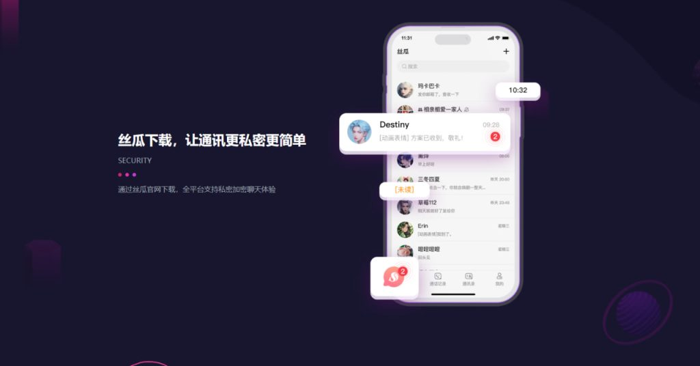
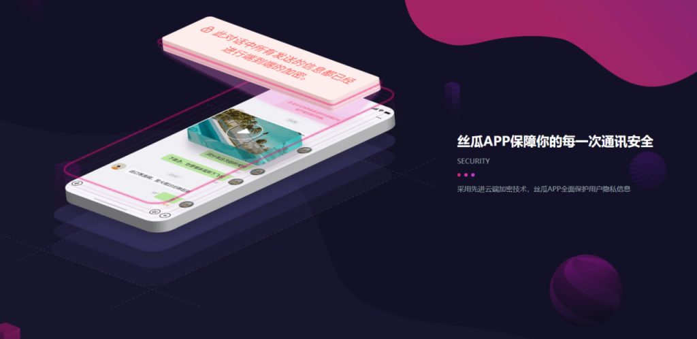

丝瓜聊天有手机版吗？
是的，丝瓜聊天有手机版应用，支持在iOS和Android设备上使用。用户可以在各大应用商店下载并安装丝瓜聊天的官方手机版，方便随时随地进行聊天和管理账号。手机应用提供了与电脑版相似的功能，便于用户在移动设备上轻松沟通。
丝瓜聊天手机版的下载与安装
如何下载丝瓜聊天手机版
-
在应用商店搜索：你可以在手机的应用商店（如App Store或Google Play）中搜索“丝瓜聊天”，然后点击“下载”按钮进行安装。确保下载的是官方版本，避免安装第三方应用。
-
通过官方网站获取链接：如果你无法通过应用商店下载，可以访问丝瓜聊天官网，找到适用于iOS或Android系统的下载链接。点击下载链接后，系统会自动引导你到正确的应用商店页面进行下载。
-
扫码下载：一些网站或平台可能会提供二维码，用户可以使用手机扫描二维码直接跳转到相应的应用商店页面进行下载，快速便捷。
安装丝瓜聊天手机版的步骤
-
下载并启动安装程序：下载完成后，点击手机屏幕上的安装文件。对于Android设备，系统可能会要求你允许安装来自未知来源的应用，记得在设置中开启此权限；对于iOS设备，通常会自动完成安装。
-
按提示完成安装：在安装过程中，手机系统会提示你是否允许应用访问设备的某些权限（如联系人、存储等）。根据需求选择允许或拒绝，安装过程会在几分钟内完成。
-
登录账户并设置：安装完成后，打开丝瓜聊天应用，使用你已有的账号进行登录。若没有账号，可以选择注册新账号。登录后，根据个人喜好进行头像、昵称等基本设置，开始使用丝瓜聊天的各项功能。
丝瓜聊天手机版的主要功能
了解手机版的基本功能
-
即时通讯：丝瓜聊天手机版提供快速、稳定的即时通讯功能，支持发送文字、语音、图片、视频等多种消息格式。用户可以方便地与朋友、家人或同事进行实时交流，沟通无障碍。
-
语音和视频通话：除了文字消息外，丝瓜聊天手机版还支持语音和视频通话功能，让用户能够通过更直接、更亲密的方式与他人沟通。无论是单聊还是群聊，语音视频通话都可以随时开启。
-
文件传输：丝瓜聊天手机版允许用户轻松传输各种文件，如文档、表格、PDF文件等，支持群组或一对一的文件传输。这使得工作交流和文件共享更加高效便捷。
如何使用手机版的聊天和群组功能
-
一对一聊天：在丝瓜聊天手机版中，用户可以与联系人进行一对一的聊天，发送文字、表情、图片等消息。在聊天界面中，用户还可以查看历史消息、发送语音消息，以及快速回复对方的信息。
-
群组聊天功能：丝瓜聊天手机版允许用户创建和加入群组，进行多人聊天。群组内，成员可以发布消息、分享文件、进行讨论等。群主或管理员可设置群组权限、管理成员，确保群聊的秩序。
-
群公告与设置：群主和管理员可以通过手机版设置群组公告，向所有成员发布重要通知。用户还可以在群组设置中调整群名称、头像、群成员权限等。群成员可以参与讨论、投票和查看群聊历史记录。

丝瓜聊天手机版的更新与维护
如何更新丝瓜聊天手机版
-
自动更新：如果你的手机开启了应用自动更新功能，丝瓜聊天手机版会在有新版本发布时自动下载并安装更新。你可以在手机的设置中查看自动更新的状态，确保更新不会错过。
-
手动更新：用户也可以手动检查是否有新版本可用。进入应用商店（如App Store或Google Play），搜索丝瓜聊天，查看是否显示“更新”按钮。点击后，系统会自动下载并安装最新版本。
-
通过官网获取更新：如果你没有通过应用商店安装丝瓜聊天，也可以访问丝瓜聊天的官方网站，获取最新版本的下载链接。通过官网下载并安装应用的最新版本，确保你使用的是最新的功能和修复。
了解手机版更新的内容
-
功能优化与新增功能：每次更新通常会包括新功能的添加或现有功能的改进。例如，新的聊天功能、增强的表情包、或者提升视频通话质量等。更新日志中会详细列出这些新增或优化的内容。
-
安全性修复：为了保护用户的隐私和数据安全，丝瓜聊天的每次更新都可能包括针对系统漏洞的修复。通过更新，用户可以享受到更高的安全性，减少被黑客攻击或数据泄露的风险。
-
界面改进与用户体验提升：除了功能和安全性的更新，丝瓜聊天还可能对应用界面进行美化或调整。例如，优化聊天界面、改进群组管理功能、增强通知系统等，使用户体验更加流畅和友好。

如何在丝瓜聊天手机版管理多个账号
使用不同设备登录多个账号
-
手机与平板分开使用：你可以在不同的设备上登录多个丝瓜聊天账号。比如，一个账号可以登录在手机上，另一个账号可以在平板设备上登录。这样，你就可以在多个设备上独立管理不同的账号。
-
同时登录多个手机：如果你有多部手机，可以在每部手机上分别登录不同的丝瓜聊天账号。通过这种方式，你能够在不同设备之间轻松切换和管理多个账号。
-
使用网页版登录：除了手机版，丝瓜聊天还支持网页版登录。你可以在手机和电脑、平板等设备上分别登录不同的账号，方便在多个设备间无缝切换，确保每个账号都得到有效管理。
切换账号的简单步骤
-
退出当前账号并重新登录：如果你希望切换账号，可以通过丝瓜聊天手机版的“设置”页面退出当前账号。退出后，你可以输入新的账号信息，重新登录到另一个账号。这个操作虽然简单，但需要重复登录步骤。
-
账号切换功能：某些版本的丝瓜聊天手机版可能提供了“账号切换”功能，使得用户可以不退出当前账号，直接在同一应用中切换到其他账号。用户只需点击设置中的“切换账号”选项，选择目标账号进行切换，操作更加便捷。
-
保持多个账号登录状态：如果你不想频繁切换，可以通过多个设备同时登录不同的账号。在这种情况下，每个设备上的丝瓜聊天应用都会独立运行，保持各自的账号状态，方便管理多个账号而不干扰彼此。

丝瓜聊天手机版的安全性与隐私保护
如何保护丝瓜聊天账号的安全
-
启用强密码和定期更换：为确保丝瓜聊天账号的安全，首先要设置强密码，避免使用简单易猜的密码。建议使用包含字母、数字和特殊字符的组合，并定期更换密码，以防账号被盗。
-
启用二步验证：丝瓜聊天支持二步验证功能。通过启用二步验证，除了输入密码，还需要提供手机验证码或邮件验证码，增加账号的安全性，即便密码泄露，黑客也难以登录。
-
警惕可疑链接和诈骗信息：不要点击来源不明的链接或陌生人发来的可疑信息。这些链接可能带有恶意软件，窃取你的账号信息。在使用丝瓜聊天时，确保所有消息都来自可靠来源，避免被骗或泄露个人信息。
提高手机版数据隐私的建议
-
限制应用权限：丝瓜聊天手机版会请求一些权限，如访问联系人、相册和麦克风等。为了保护隐私，用户可以根据需要选择拒绝某些不必要的权限。确保应用只访问必要的信息，不授予不相关的权限。
-
定期清理聊天记录和缓存：丝瓜聊天中存储的聊天记录和文件可能包含敏感信息。定期清理这些记录和缓存，尤其是聊天中的个人隐私内容，能够降低数据泄露的风险。可以在设置中找到相关选项清除聊天记录。
-
使用加密通信：丝瓜聊天采用加密技术确保消息的安全传输。在使用时，确保应用的加密功能已启用，不要通过不安全的网络发送敏感信息。避免在公共Wi-Fi下进行敏感操作，确保个人信息安全。